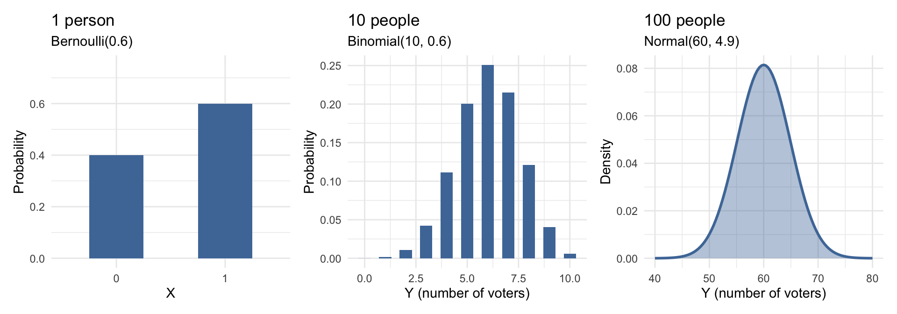
Week 6
Sociology 106: Quantitative Sociological Methods
Housekeeping
HW 3: Great job overall. Two main comments:
- Make sure you are removing missing in your marginal frequency calculations (Q1:
filter(!is.na(degree), !is.na(marital)) |>) - Make sure to answer all the interpretation questions (e.g., Q4b asked to interpret the correlation coefficient)
Where We Are in the Course
- Last week (Week 5): basics of probability theory
- This week (Week 6): probability models of distributions
- Next week (Week 7): sampling distributions
- Then (Weeks 8-9): confidence intervals and hypothesis tests
Main idea: Today is the bridge from probability language to inferential statistics.
Agenda
- Random variables and probability distributions
- Discrete models:
- Bernoulli (Binary): one yes/no outcome
- Binomial: number of successes across repeated Bernoulli trials
- Continuous models:
- Normal: a continuous model that often approximates Binomial outcomes when samples are large
- Implementation in R:
dbinom(),pbinom(),pnorm(),qnorm()
Our Running Example for Today
Imagine we’re conducting a survey about voter turnout. Each person either voted (1) or didn’t vote (0).
From prior research — like census records or previous surveys — we know that about 60% of eligible voters in this population actually vote. So we’ll set the probability of voting at \(\pi = 0.6\).
Today we’ll ask three questions about this scenario, and each one leads to a different probability distribution:
| Question | Distribution | Sample size |
|---|---|---|
| Did this one person vote? | Bernoulli | 1 person |
| Out of 10 people surveyed, how many voted? | Binomial | 10 people |
| Out of 100 people surveyed, roughly how many voted? | Normal (approximation) | 100 people |
The Ladder: A Preview
These three distributions are connected — each is the same voting question at a different scale:
Same event, different scale: one person → a small sample → a large sample. We’ll build up to this step by step.
Random Variables and Distributions
Connect sample spaces and probability to data:
A random variable assigns a number to each outcome of a random process
- For example, we code “voted” as 1 and “didn’t vote” as 0
A probability distribution tells us how likely each value is
- Discrete outcomes: a probability for each possible value (a Probability Mass Function (PMF))
- Continuous outcomes: probabilities come from areas under a curve (a Probability Density Function (PDF))
R Functions for Distributions
R uses a consistent naming pattern for working with probability distributions. Once you learn the prefixes, you can apply them to any distribution:
| Prefix | What it does | Question it answers | Example |
|---|---|---|---|
d |
density / probability at a point | “Probability of exactly k successes?” | dbinom(6, size = 10, prob = 0.6) |
p (Binomial) |
cumulative count probability | “Probability of at most k successes in n trials?” | pbinom(6, size = 10, prob = 0.6) |
p (Normal) |
cumulative area probability | “Proportion of values at or below x?” | pnorm(65, mean = 71, sd = 8) |
q |
quantile (inverse of p) |
“What value has this percentile?” | qnorm(0.95, mean = 60, sd = 4.9) |
R Functions for Distributions
The suffix tells you the distribution: binom for Binomial, norm for Normal.
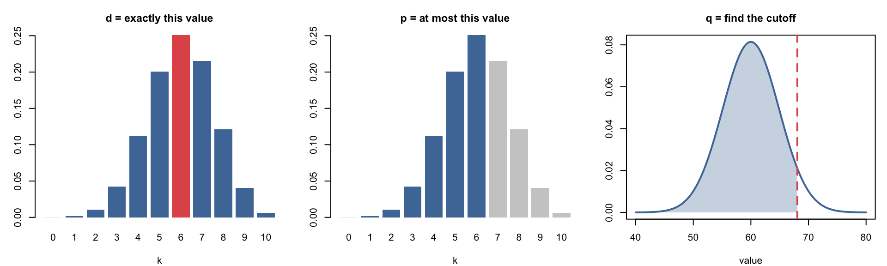
We’ll use each of these as we go. Keep this pattern in mind!
Did This Person Vote? The Bernoulli Model
The simplest probability distribution: one trial, two outcomes
The Bernoulli Model
In our survey, each person’s response is either 0 (didn’t vote) or 1 (voted). Since we know from prior research that 60% of this population votes:
- P(voted) = P(X = 1) = 0.6
- P(didn’t vote) = P(X = 0) = 0.4
In general, for any binary outcome with probability \(\pi\):
\[P(X=1)=\pi, \quad P(X=0)=1-\pi\]
This is the Bernoulli model. The parameter \(\pi\) is just the probability that the event occurs.
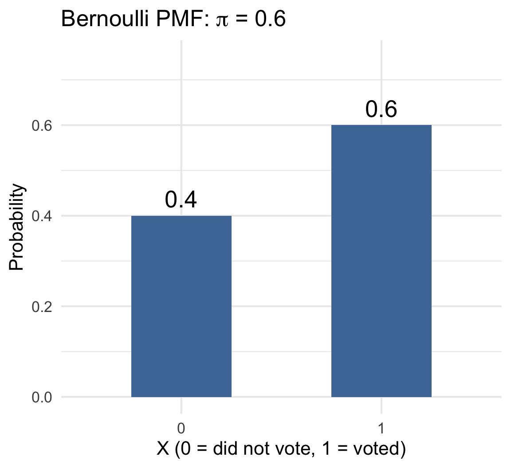
Bernoulli Mean and Variance
Just as we computed summary statistics from data in Weeks 3–4, probability models have their own summary measures. These tell us what to expect before we collect data:
The long-run average of this random variable is just the probability itself:
\[E[X] = \pi = 0.6\]
If we survey many people one at a time, the average of all their 0/1 responses will be close to 0.6 — the proportion who voted.
This is why estimating a proportion is estimating a mean.
How much do individual outcomes vary around that average?
\[\text{Var}(X) = \pi(1-\pi) = 0.6 \times 0.4 = 0.24\]
\[\text{SD}(X) = \sqrt{\pi(1-\pi)} = \sqrt{0.24} \approx 0.49\]
- Variance is largest at \(\pi = 0.5\) (maximum uncertainty — a coin flip)
- Variance is smallest near \(\pi = 0\) or \(\pi = 1\) (outcome almost certain)
Bernoulli: Sample Statistics vs. Model Parameters
| From data (what we compute) |
From the model (what we assume) |
Voting example | |
|---|---|---|---|
| Center | Sample proportion: \(\hat{p}\) | \(E[X]=\pi\) | \(\hat{p}\) vs. \(\pi = 0.6\) |
| Spread | Sample variance: \(s^2\) | \(\pi(1-\pi)\) | \(s^2\) vs. \(0.6 \times 0.4 = 0.24\) |
We compute \(\hat{p}\) from our data (the fraction of respondents who said they voted). The model says the true probability is \(\pi = 0.6\).
The goal of statistical inference: use the sample statistic (\(\hat{p}\)) to learn about the model parameter (\(\pi\)).
How Many Voters in a Sample? The Binomial Model
Moving from one person to many: what happens when we add up Bernoulli outcomes?
From Bernoulli to Binomial
Now suppose we survey 10 people. Each person independently voted with probability 0.6.
What’s the probability that exactly 6 of the 10 voted? Or 4? Or 8?
We’re adding up 10 independent Bernoulli outcomes. The total, \(Y\), follows a Binomial distribution:
\[Y \sim \text{Binomial}(n=10, \; \pi=0.6)\]
The chart shows the probability of every possible outcome from 0 to 10 voters. The tallest bar (k = 6) is the single most likely result.
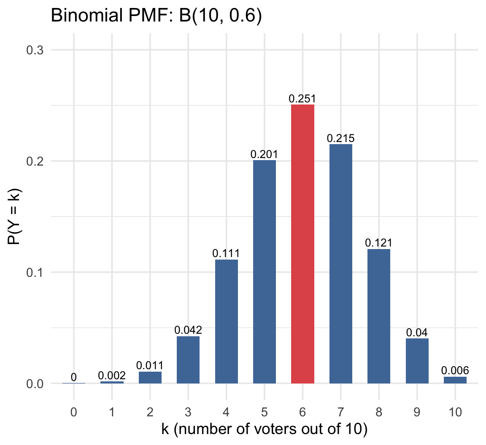
Binomial Assumptions
The Binomial model requires four things to be true. Here’s what each means for our voting example:
- Fixed number of trials: we survey exactly \(n = 10\) people
- Binary outcomes: each person either voted or didn’t
- Independence: one person’s vote doesn’t affect another’s
- Same probability: each person has the same \(\pi = 0.6\) chance of having voted
In real social data, independence is the assumption most likely to fail — people in the same household, neighborhood, or social network influence each other.
Binomial Mean and Standard Deviation
For our sample of 10 people with \(\pi = 0.6\):
Expected number of voters:
\[E[Y]=n\pi = 10 \times 0.6 = 6 \text{ voters}\]
Standard deviation (how much the count varies from sample to sample):
\[\text{SD}(Y)=\sqrt{n\pi(1-\pi)} = \sqrt{10 \times 0.6 \times 0.4} \approx 1.55\]
We’d expect about 6 voters, give or take about 1.5. In most samples, we’d see somewhere between 4 and 8 voters.
Computing a Binomial Probability
Question: What’s the probability that exactly 6 of our 10 people voted?
We need two ingredients:
- The probability of any one specific sequence with 6 voters and 4 non-voters: \(0.6^6 \times 0.4^4\)
- The number of ways to arrange 6 voters among 10 people: \(\binom{10}{6} = 210\)
Putting it together:
\[P(Y=6) = \underbrace{210}_{\text{arrangements}} \times \underbrace{0.6^6 \times 0.4^4}_{\text{probability of each}} = 0.2508\]
In R, dbinom() does this calculation for us:
dbinom(6, size = 10, prob = 0.6)
# ^ ^ ^
# k n π
# "probability of exactly 6 successes in 10 trials with π = 0.6"Cumulative Probabilities: “At Most” Questions
Often we want to know the probability of getting at most some number of successes. This is a cumulative probability: \(P(Y \le k)\).
Example: What’s the probability that at most 4 of our 10 people voted?
# P(Y ≤ 4) for Y ~ Binomial(10, 0.6)
pbinom(4, size = 10, prob = 0.6)[1] 0.1662386What about “at least” 7 voters? Use the complement: \(P(Y \ge k) = 1 - P(Y \le k-1)\)
# P(at least 7 voted) = 1 - P(at most 6 voted)
1 - pbinom(6, size = 10, prob = 0.6)[1] 0.3822806dbinom() gives the probability at exactly one value (\(P(Y=k)\)), while pbinom() adds up all the bars from 0 to \(k\) to give \(P(Y \le k)\).
Practice: Binomial Probabilities
Let’s some scenarios that are similar to HW questions.
Lisa makes free throws 75% of the time and shoots 8 free throws at practice. What is the probability she makes at least 7?
\(P(X \ge 7)\) means \(X = 7\) or \(X = 8\). Use the complement:
\[P(X \ge 7) = 1 - P(X \le 6)\]
1 - pbinom(6, size = 8, prob = 0.75)[1] 0.3670807About a 37% chance she makes at least 7 of 8.

Same scenario: Lisa, n = 8, π = 0.75. What is the probability she makes between 4 and 6 free throws?
\(P(4 \le X \le 6)\) — add up bars from 4 to 6. Equivalently:
\[P(4 \le X \le 6) = P(X \le 6) - P(X \le 3)\]
pbinom(6, size = 8, prob = 0.75) -
pbinom(3, size = 8, prob = 0.75)[1] 0.6056213About a 61% chance she makes between 4 and 6.
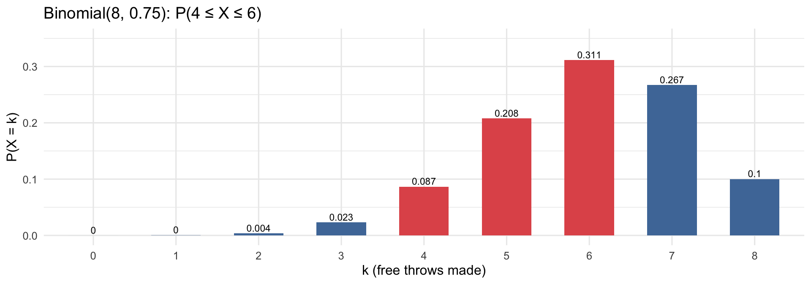
Same scenario: Javier, n = 50, π = 0.80. He needs at least 35 correct (70%) to pass. What’s the probability he passes?
70% of 50 = 35. “Pass” means \(X \ge 35\):
\[P(X \ge 35) = 1 - P(X \le 34)\]
1 - pbinom(34, size = 50, prob = 0.80)[1] 0.9691966About a 97% chance Javier passes.
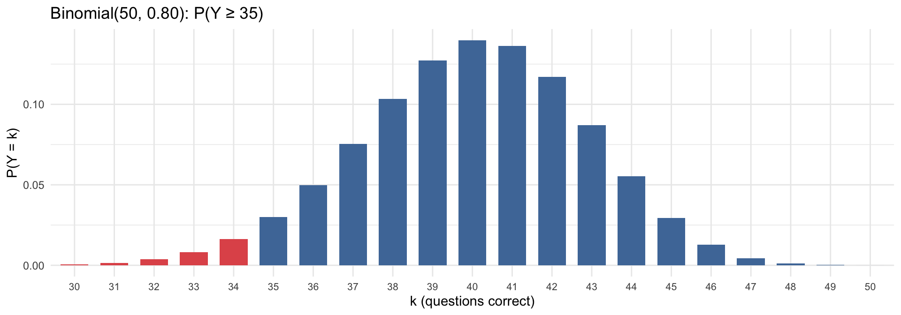
Binomial: Sample Statistics vs. Model Parameters
| From data (what we compute) |
From the model (what we assume) |
Voting example (\(n = 10\)) | |
|---|---|---|---|
| Center | Sample count of voters | \(E[Y] = n\pi\) | observed count vs. \(10 \times 0.6 = 6\) |
| Spread | Sample SD of counts | \(\text{SD}(Y) = \sqrt{n\pi(1-\pi)}\) | sample SD vs. \(\approx 1.55\) |
If we repeated our survey of 10 people many times, the average number of voters across all surveys would be close to 6, and the counts would typically range from about 4 to 8.
What About Larger Samples? The Normal Approximation
As sample size grows, the Binomial starts to look like a smooth bell curve
Why Binomial Starts Looking Normal
What if we surveyed 100 people instead of 10? As \(n\) grows, the Binomial distribution becomes smoother and starts to resemble a bell-shaped curve:

This is an early step toward central limit thinking: sums of many random components often look approximately Normal.
The Normal Distribution
For \(n = 100\) voters with \(\pi = 0.6\), the Binomial has:
- Mean: \(100 \times 0.6 = 60\) voters
- SD: \(\sqrt{100 \times 0.6 \times 0.4} \approx 4.9\) voters
What does SD = 4.9 mean? In most surveys of 100 people, the number of voters will be within about 5 of 60 — typically between 55 and 65.
Instead of computing exact Binomial probabilities across 101 values, we approximate with a Normal distribution: \(N(60, 4.9)\).
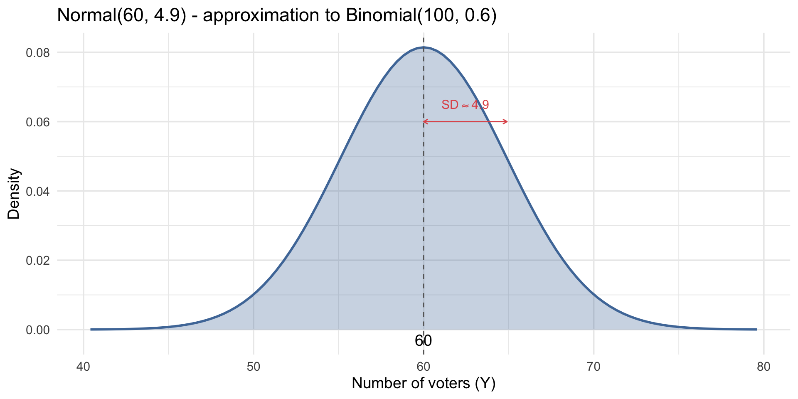
For continuous models, probabilities come from areas under the curve.
Key Properties of Normal Distributions
- Symmetric around the mean
- Mean, median, and mode coincide
- 68-95-99.7 rule:
- within 1 SD (\(\pm 4.9\)): about 68% of samples → 55 to 65 voters
- within 2 SD (\(\pm 9.8\)): about 95% of samples → 50 to 70 voters
- within 3 SD (\(\pm 14.7\)): about 99.7% of samples → 45 to 75 voters
This rule gives us a quick way to judge whether an observed result is “typical” or “unusual.”
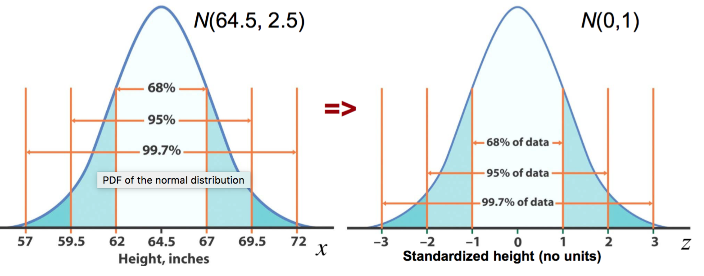
Normal: Sample Statistics vs. Model Parameters
| From data (what we compute) | From the model (what we assume) | Voting example (\(n = 100\)) | |
|---|---|---|---|
| Center | Sample count of voters | \(\mu = n\pi\) | observed count vs. \(100 \times 0.6 = 60\) |
| Spread | Sample SD | \(\sigma = \sqrt{n\pi(1-\pi)}\) | sample SD vs. \(\approx 4.9\) |
If we repeated our survey of 100 people many times, the counts would center around 60 and mostly fall between about 50 and 70 (within 2 SDs).
Standardization and Z-Scores
A z-score tells you how many standard deviations a value is from the mean:
\[z = \frac{\text{observed} - \text{mean}}{\text{SD}}\]
Example: We observed 70 voters out of 100. How unusual is that?
\[z = \frac{70 - 60}{4.9} \approx 2.04\]
That’s about 2 SDs above the mean. By the 68-95-99.7 rule, only about 2.5% of samples would show 70+ voters.
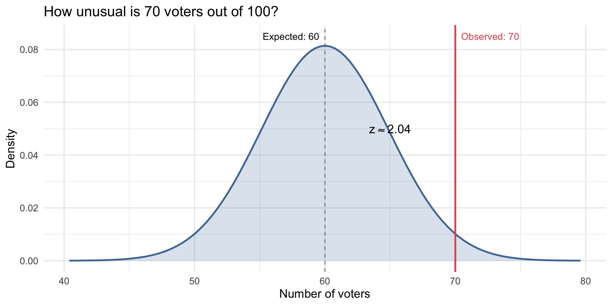
Computing Normal Probabilities in R
What’s the probability of observing between 55 and 65 voters?
pnorm(65, mean = 60, sd = 4.9) -
pnorm(55, mean = 60, sd = 4.9)[1] 0.6924651In general: \(P(a \le Y \le b) = P(Y \le b) - P(Y \le a)\)
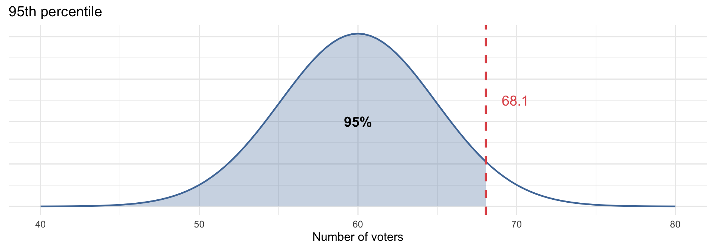
What’s the probability of observing at most 50 voters?
pnorm(50, mean = 60, sd = 4.9)[1] 0.02063454This is \(P(Y \le 50)\) — the area to the left of 50.
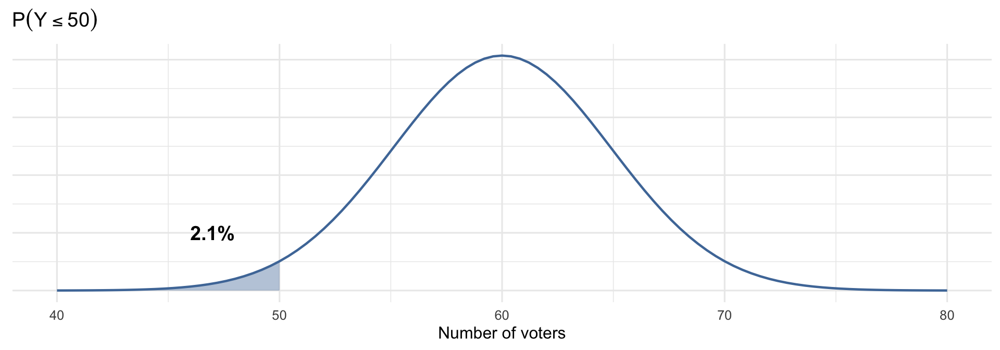
What’s the probability of observing more than 70 voters?
1 - pnorm(70, mean = 60, sd = 4.9)[1] 0.02063454We use \(1 - P(Y \le 70)\) because pnorm() gives the area to the left.
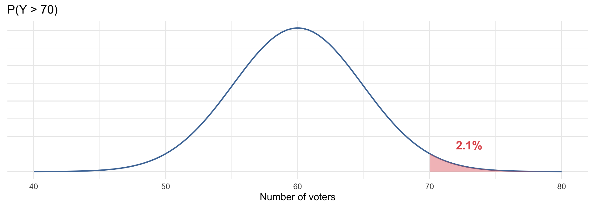
Below what count do 95% of samples fall?
qnorm(0.95, mean = 60, sd = 4.9)[1] 68.05978qnorm() is the inverse of pnorm() — it goes from probability to value.

Practice: Z-Scores and Normal Probabilities
These examples are similar to what you’ll see on HW #5. Let’s work through them together.
Andre’s height is 75 inches. Heights in his population are Normal with mean 69 inches and SD 3 inches. Calculate his z-score.
\[z = \frac{75 - 69}{3} = 2.0\]
Andre is 2 standard deviations above the mean. By the 68-95-99.7 rule, he is taller than about 97.5% of the population — only 2.5% of people are taller.
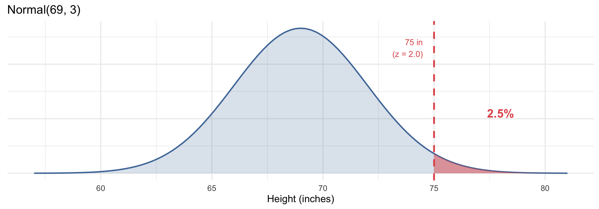
Vehicle speeds on I-5 are approximately Normal with mean 71 mph and SD 8 mph. The speed limit is 65 mph. What proportion of vehicles are at or below the speed limit?
pnorm(65, mean = 71, sd = 8)[1] 0.2266274Only about 23% of vehicles are going at or below 65 mph.
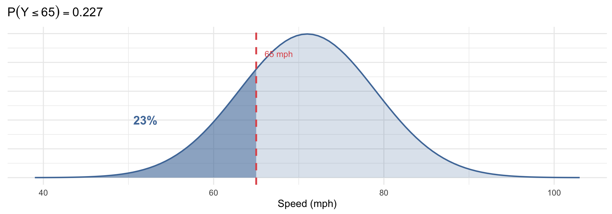
SAT scores are approximately Normal with mean 1026 and SD 209. The NCAA requires a score above 820 to compete. What proportion of students qualify?
1 - pnorm(820, mean = 1026, sd = 209)[1] 0.8378466About 84% of students score above 820.
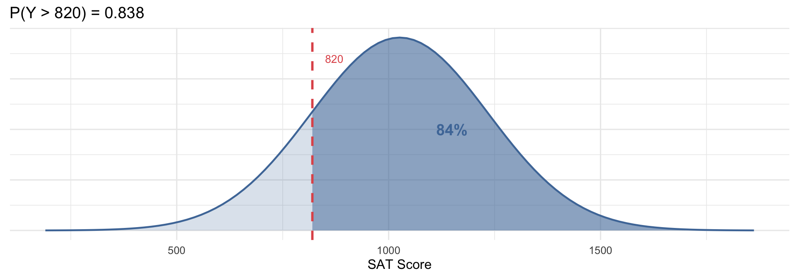
Using the same SAT distribution, what proportion score between 720 and 820 (partial qualifiers)?
pnorm(820, mean = 1026, sd = 209) - pnorm(720, mean = 1026, sd = 209)[1] 0.09057216About 9% of students fall in this range.
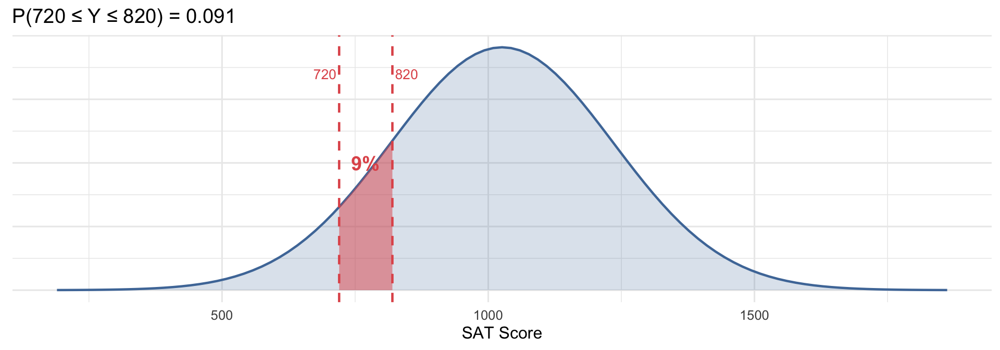
Vehicle speeds again (mean 71, SD 8). A new speed limit will be set so that 10% of vehicles exceed it. What should the new limit be?
qnorm(0.90, mean = 71, sd = 8)[1] 81.25241The new speed limit should be about 81 mph — 90% of vehicles travel at or below this speed.
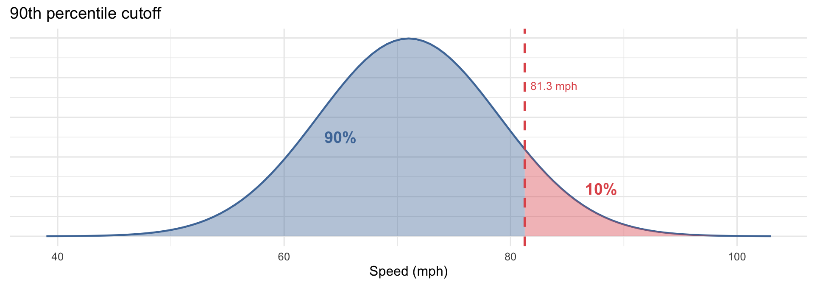
R Translation Guide
| Statistical question | R function |
|---|---|
| Exact Binomial probability \(P(Y=k)\) | dbinom(k, size = n, prob = pi) |
| Cumulative Binomial probability \(P(Y\le k)\) | pbinom(k, size = n, prob = pi) |
| Normal cumulative probability \(P(Y\le x)\) | pnorm(x, mean = mu, sd = sigma) |
| Normal percentile / quantile | qnorm(q, mean = mu, sd = sigma) |
Connecting It All Together
A Bernoulli model describes one yes/no outcome with parameter \(\pi\); summing many Bernoulli outcomes gives a Binomial model, and as trials grow large, that Binomial model is often well approximated by a Normal distribution.
This connects:
- Individual randomness (Bernoulli) — 1 person
- Repeated processes (Binomial) — 10 people
- Continuous approximation and inference tools (Normal) — 100 people
The Ladder, Visually
One trial → many trials → smooth approximation, all with \(\pi = 0.6\):
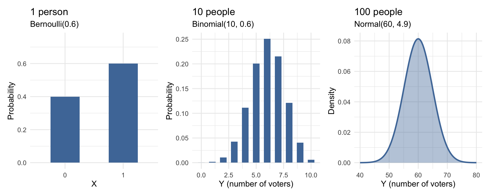
Same event, three levels of analysis. This is the logic that powers the rest of the course.
Key Takeaways
- Random variables represent uncertainty numerically
- Probability distributions assign probabilities to possible values
- Bernoulli models one binary trial → mean is \(\pi\)
- Binomial models the sum of many Bernoulli trials → mean is \(n\pi\)
- Normal approximates the Binomial when \(n\) is large
- Statistical inference uses sample statistics to learn about model parameters
One trial (Bernoulli) → many trials (Binomial) → smooth large-sample pattern (Normal)
Why This Matters for the Rest of the Semester
- Next week (Week 7): sampling distributions build directly on this Binomial-to-Normal logic
- Weeks 8-9: confidence intervals and hypothesis tests rely on Normal-based approximations
- Later regression units: model interpretation and uncertainty quantification use the same distributional thinking
Today is not isolated content. It is core infrastructure for the rest of SOC 106.
Questions?
Weekly Assignment #5
Due: Thursday, March 5 by 11:59 PM
Format: Similar to last week’s weekly assignment: mostly a problem set
Important: You will use a little bit of R, so please submit your assignment (and your code!) on bCourses
Paper Proposal (5%)
A two-page double-spaced proposal for your final paper is due on bCourses by Thursday, February 26 at 11:59 PM. Here’s an example.
Your proposal should include:
- Research question - What are you trying to answer?
- Why it matters - Why should we care about this question?
- Hypotheses - What do you think the answer is, and why?
- Data source - What dataset will you use?
- Key variables - Identify your independent and dependent variables
Note: You do not need to discuss statistical techniques at this point.
In-class Lab #3
Let’s practice some of what we learned today:
- Download
lab3.qmdfrom bCourse under “assignments” > “Lab #3” - Place
lab3.qmdin yourlabsfolder. - Use the
Explorerbutton on the left to find and openlab3.qmd - Let’s work through it together!